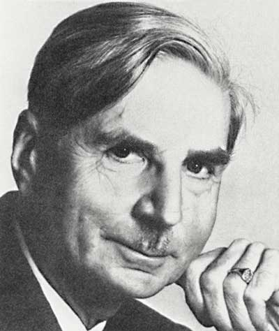
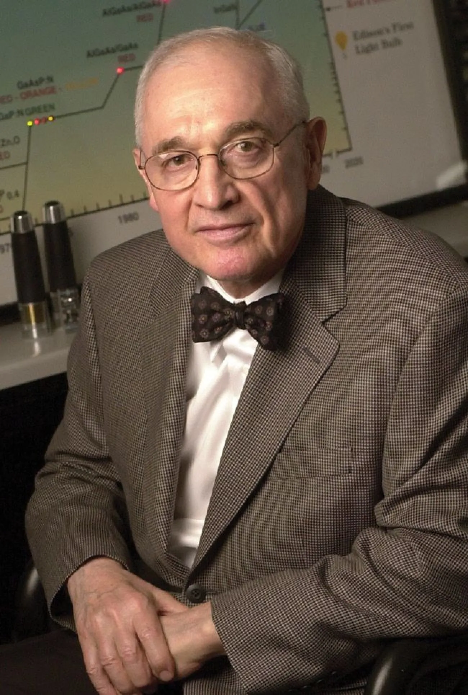

✕

威廉・肖克利
（1910—1989）

沃尔特・肖特基
（1886—1976）

尼克・何伦亚克
（1928—2022）
二极管是最常用的电子器件之一，具有单向导电性，核心结构是PN结，是半导体器件的基础。
从早期的矿石检波器，到真空二极管，再到半导体二极管，二极管发展见证了电子技术从无到有、从弱到强的全过程。
德国物理学家费迪南德·布劳恩发现金属与硫化铅晶体接触具有单向导电性，这是人类首次发现二极管效应。
英国科学家约翰·弗莱明发明真空二极管，世界上第一个电子管器件，开启无线电通信时代。
在贝尔实验室工作的拉塞尔·奥尔发现了PN结以及硅中的光伏效应，奠定现代电子学基础。
威廉・肖克利奠定硅基二极管基础、沃尔特・肖特基提出肖特基二极管理论、尼克・何伦亚克发明实用LED，三大关键器件相继问世，二极管正式进入规模化、集成化、微型化时代。
二极管广泛应用于电源、通信、光伏、显示、人工智能等领域，是现代科技不可或缺的器件。
威廉・肖克利
（1910—1989）

沃尔特・肖特基
（1886—1976）

尼克・何伦亚克
（1928—2022）